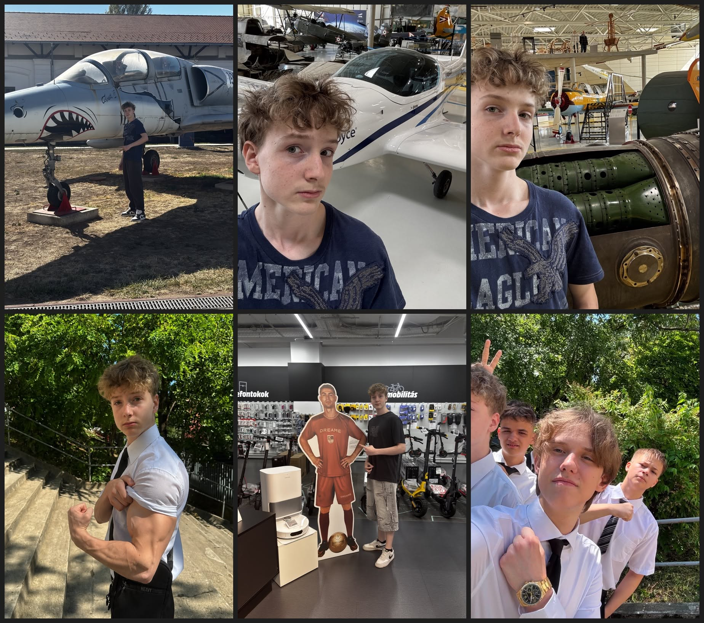

14 éves vagyok.Miskolcrol jöttem azon belül avasról. A miskolci Herman Ottó AMI-ból. Van macskám,szeretek játszani foleg CS2-vel szoktam neha sakkozni
Azért választottam a kandót, mert szeretek gepekel foglalkozni meg érdekel is maga a szak
